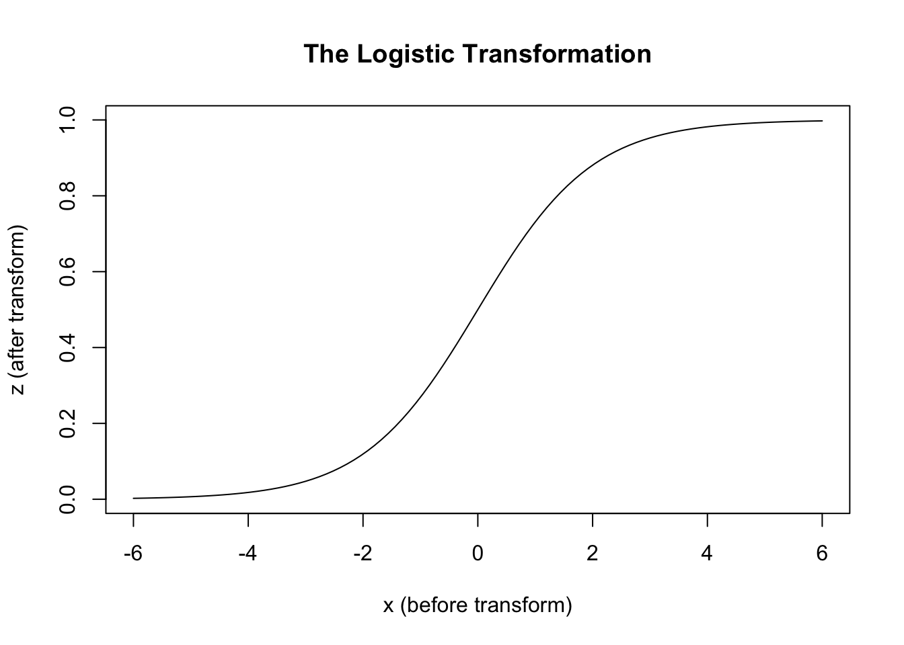

tl;dr
This is part of a series of posts which introduce and discuss the implications of a general framework for thinking about statistical modelling. This framework is most clearly expressed in King, Tomz, and Wittenberg (2000) .
Part 2: Systematic components and link functions
In part 1 of this series we introduced the following general framework for thinking about statistical models and what they contain.
Stochastic Component
\[ Y_i \sim f(\theta_i, \alpha) \]
Systematic Component
\[ \theta_i = g(X_i, \beta) \] The terminology are as described previously.
These equations are too broad and abstract to be implemented directly. Instead, specific choices about the \(f(.)\) and \(g(.)\) need to be made. King, Tomz, and Wittenberg (2000) gives the following examples:
Logistic Regression
\[ Y_i \sim Bernoulli(\pi_i) \]
\[ \pi_i = \frac{1}{1 + e^{-X_i\beta}} \]
Linear Regression
\[ Y_i \sim N(\mu_i, \sigma^2) \] \[ \mu_i = X_i\beta \]
So, what’s so special about linear regression, in this framework?
In one sense, not so much. It’s got a systematic component, and it’s got a stochastic component. But so do other models. But in another sense, quite a lot. It’s a rare case where the systematic component, \(g(.)\), doesn’t transform its inputs in some weird and wonderful way. We can say that \(g(.)\) is the identity transform, \(I(.)\), which in words means take what you’re given, do nothing to it, and pass it on.
By contrast, the systematic component for logistic regression is known as the logistic function. \(logistic(x) := \frac{1}{1 + e^{-x}}\) It transforms inputs that could be anywhere on the real number line to values that lay somewhere between 0 and 1. Why 0 to 1? Because what logistic regression models produce aren’t predicted values, but predicted probabilities, and nothing can be more probable than certain (1) or less probable than impossible (0).
We can compare the transformations used in linear and logistic regression as follows:1
# Define transformations
ident <- function(x) {x}
lgt <- function(x) {1 / (1 + exp(-x))}
# Draw the associations
curve(ident, -6, 6,
xlab = "x (before transform)",
ylab = "z (after transform)",
main = "The Identity 'Transformation'"
)
curve(lgt, -6, 6,
xlab = "x (before transform)",
ylab = "z (after transform)",
main = "The Logistic Transformation"
)

The usual input to the transformation function \(g(.)\) is a sum of products. For three variables, for example, this could be \(\beta_0 + \beta_1 x_1 + \beta_2 x_2\). In matrix algebra this generalises to \(\boldsymbol{X\beta}\) , where \(\boldsymbol{X}\) is the predictor data whose rows are observations, columns are variables, and whose first column is a vector of 1s (for the intercept term). The \(\boldsymbol{\beta}\) term is a row-wise vector comprising each specific \(\beta\) term, such as \(\boldsymbol{\beta} = \{ \beta_0, \beta_1, \beta_2 \}\) in the three variable example above.
What’s special about the identity transformation, and so linear regression, is that there is a fairly clear correspondence between a \(\beta_j\) term and the estimated influence of changing a predictor variable \(x_j\) on the predicted outcome \(Y\), i.e. the ‘effect of \(x_j\) on \(Y\)’. For other transformations this tends to not be the case.2
We’ll delve into how this is implemented in practice in part 3.
References
Footnotes
Note from Claude: In machine learning terminology, these link functions g(.) correspond to activation functions in neural networks. The logistic function described here is identical to the sigmoid activation commonly used in ML. Modern deep learning extends this concept: neural networks chain multiple transformations together, while GLMs apply a single transformation. The cross-entropy loss function used to train logistic regression classifiers in ML is mathematically equivalent to the negative log-likelihood used in traditional GLM estimation. Python users can explore these connections using PyTorch (
torch.nn.functional.sigmoid) or TensorFlow (tf.nn.sigmoid), which implement the same logistic transformation.↩︎Note from Claude: In machine learning terminology, these link functions g(.) correspond to activation functions in neural networks. The logistic function described here is identical to the sigmoid activation commonly used in ML. Modern deep learning extends this concept: neural networks chain multiple transformations together, while GLMs apply a single transformation. The cross-entropy loss function used to train logistic regression classifiers in ML is mathematically equivalent to the negative log-likelihood used in traditional GLM estimation. Python users can explore these connections using PyTorch (
torch.nn.functional.sigmoid) or TensorFlow (tf.nn.sigmoid), which implement the same logistic transformation.↩︎